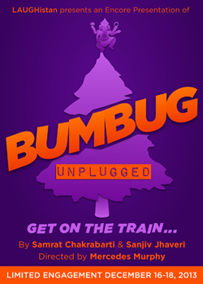

past performance |
|||
|
BUMBUG Unplugged Music by Samrat Chakrabarti BUMBUG Unplugged, an encore presentation, of a new Rock Opera by Samrat Chakrabarti and Sanjiv Jhaveri, is an electrifying musical reinvention of “A Christmas Carol” told through the looking glass of NYC Immigrants and Hyphenated America. Like so many immigrants, disillusioned Deli-owner Scroogewala left his motherland years ago to pursue the American dream. Amidst his battle with holiday merriment, Scroogewala is visited by a motley crew of misfits who remind him that love, loss and laughter are all a part of that dream he’d almost given up on. |
 | ||
|
PRODUCTION TEAM CREATIVE TEAM Sanjiv Jhaveri (Book, Lyrics) is a veteran actor of TV, Film, and the Theatre. Film: Manish Acharya’s Loins of Punjab Presents (with scenes opposite the legendary Shabana Azmi); Walkaway, Shailja Gupta’s debut film. Television: All the series of Law and Order (NBC), Conviction (NBC), Rescue Me (FX), and 3 Pilots, Drift, Hate, and the Tim Robbins directed Possible Side Effects. Regional Theatre: Yale Rep, Washington D.C.’s award-winning StudioTheatre, and Missouri Rep. In New York City: The Play Company (Sakharam Binder), the Lark Theatre, Lincoln Center Directors’ Lab, the Cherry Lane Theatre, and the Hypothetical Theatre Company. Director: Desipina Production of “7-11″, seven 11-minute plays set in a convenience store, in 2007. Writer: Collaborations with Samrat Chakrabarti to write 3 mini musicals A Very Desi Christmas, Soonderella, and Who Killed Mr. Naidu First? A Very Desi Christmas has grown into a full-length musical, called Bakwas Bumbug, which has been work shopped with Desipina, receiving a workshop production at the Wild Project in 2011. He has also worked as an accent/dialect coach. Audiobooks: Audible.com and Brilliance Audio. Titles include: Confessions of a Thug, Alif The Unseen, The Truth About Me and Amitav Ghosh’s River of Smoke. Mercedes Murphy (Director) is a veteran of the Theater business as a Director, Artistic Director, Writer, and Designer. She has directed theater and dance at various venues including the prestigious Moscow Art Theater, Lincoln Center, PS 122, the Vineyard Theater, the Market Theater, the C. Walsh Theater and the American Repertory Theatre. In addition, her works have also toured throughout Europe. Mercedes has worked as an Art Director for music videos and collaborated with artists including Coleman Hough, Jody Oberfelder, Robert Woodruff, Jay Scheib and John Bucchino. For two years, she was the resident director at the New Opera and Musical Theater Initiative in Boston. She is the Founding and Artistic Director of Théâtre Trouvé and has taught at the New York Film Academy and Harvard University. Currently, Mercedes is a professor at Montclair State University’s Department of Theatre. |
|||
upcoming performances |
|||
 |
|||
| EVQ Film Festival 2018 August 20-25 |
|||
performance archives |
|||
| 2018 | 2017 | 2016 | 2015 |
| 2014 | 2013 | 2012 | 2011 |
| 2010 | 2009 | 2008 | 2007 |